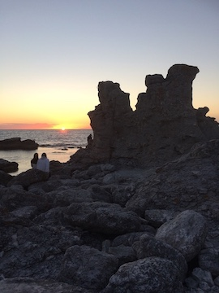
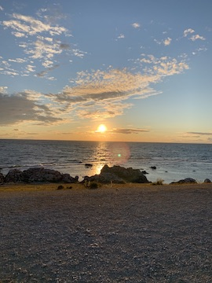
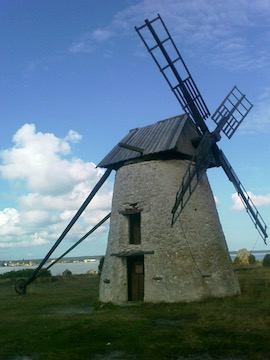
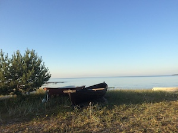
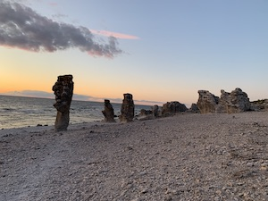
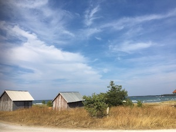

Tillbaka till Träningsapp
Hem
Information
Resmål
Portfolio
Kontakta oss
Portfolio
Här är tidigare biler som besökare har tagit på våra turer.

Bild tagen på Fårös berömda raukområde.

Fantastisk solndegång
vid Langhammar.

En av många kvarnar som finns runtomkring Fårö.

En vindstilla kväll vid Ekeviken.

Det berömda Langhammarsgubben i fin solndegång.

Gamla fiskebodar vid Norsta Auren.
Copyright:
Fanny Falck.